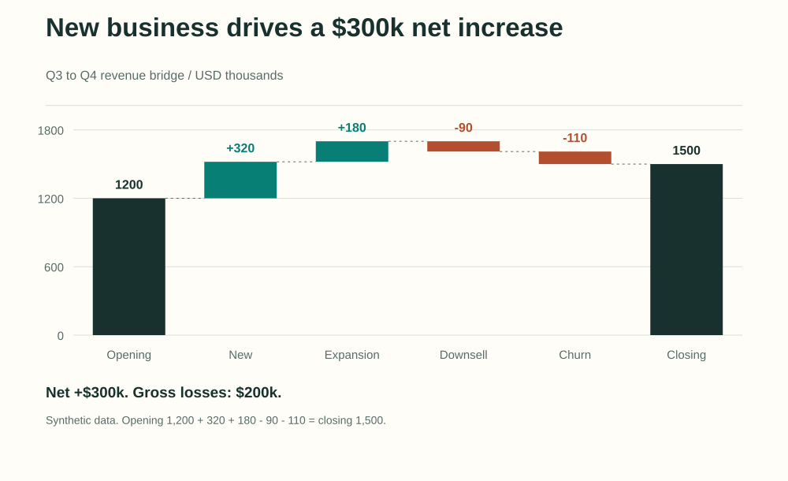
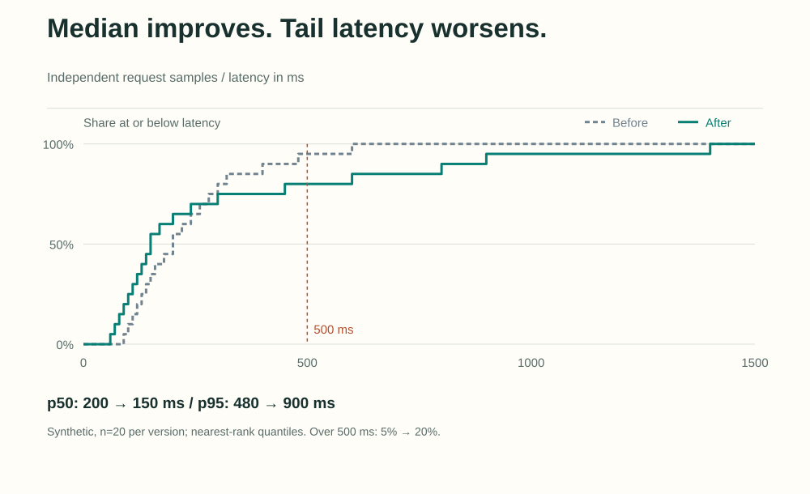
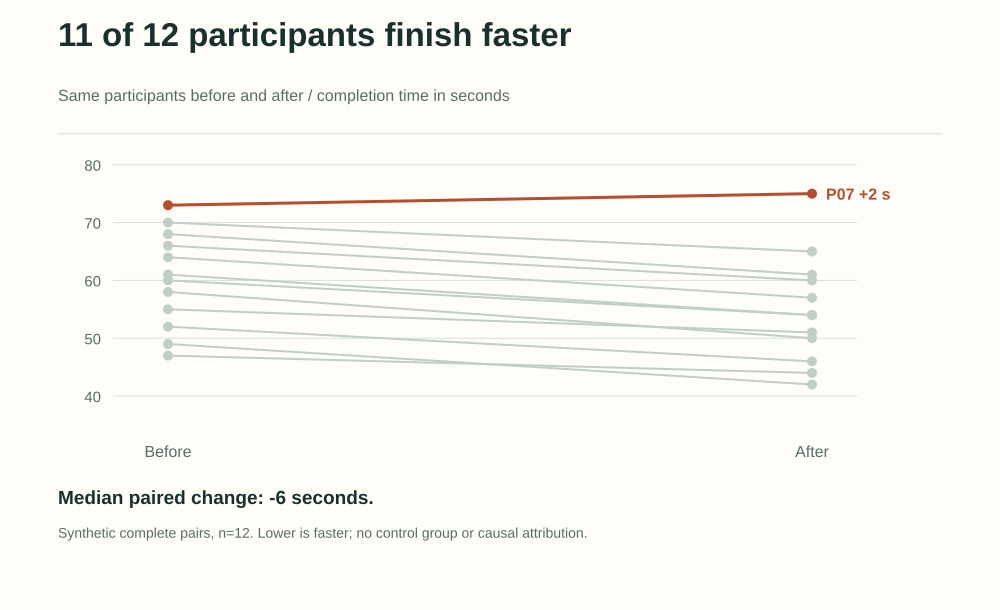
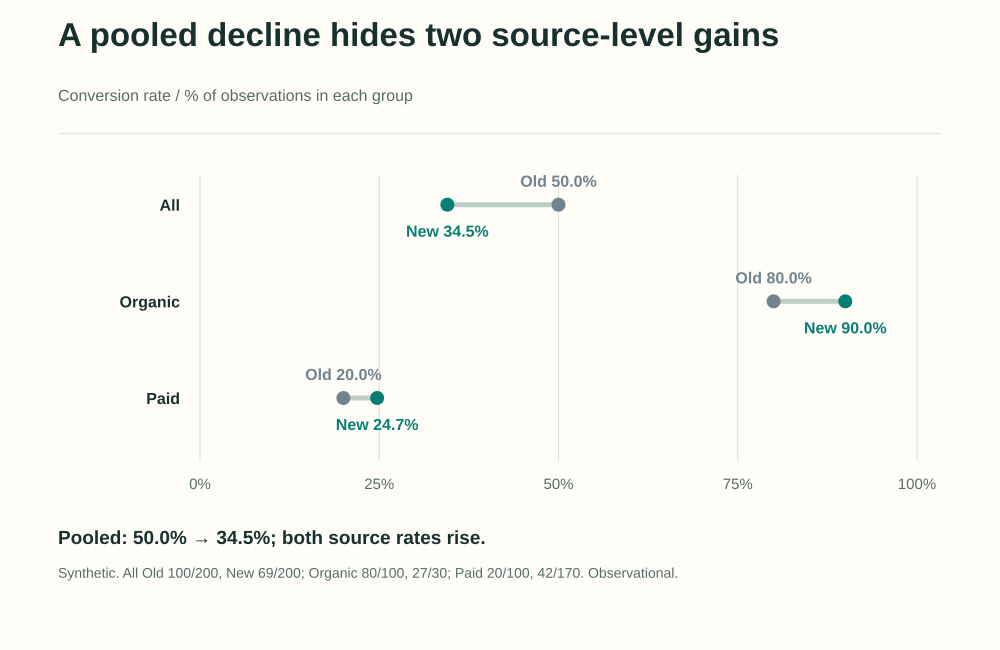
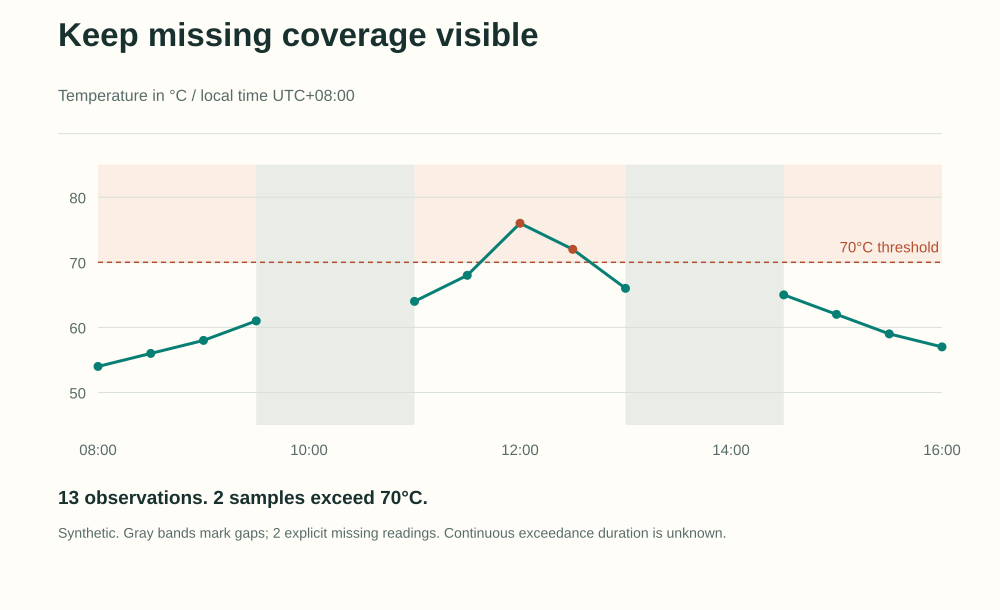
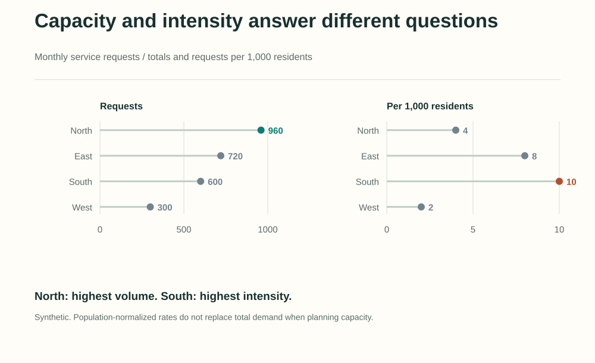
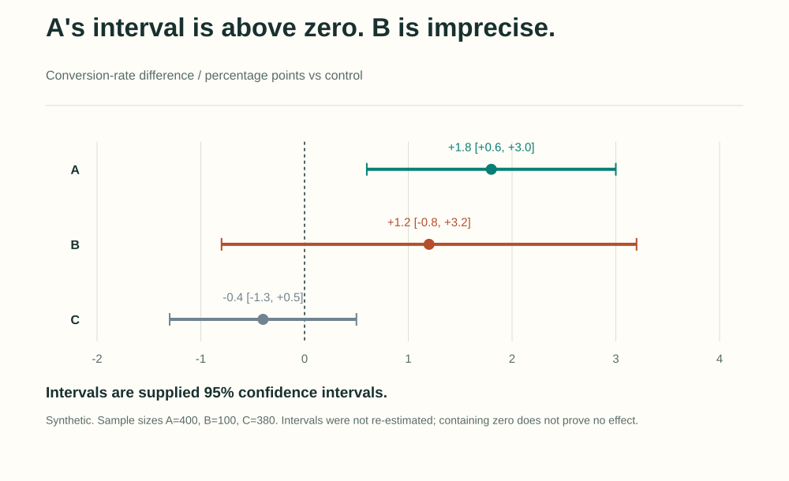
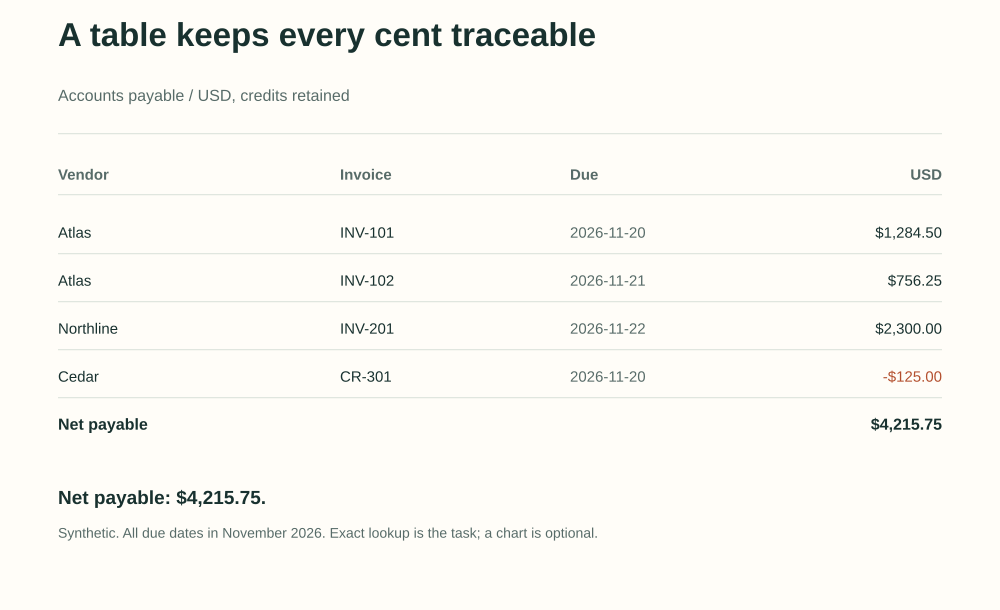

Make the point.
Keep the evidence.
从用户要回答的问题出发，选择图表、叙事与必要交互。这里展示 8 个可复现示例，覆盖 12 个模拟用户请求。全部为合成数据；这些示例不构成真实读者效果验证。
worked examples
One question at a time.
Explain the change
选瀑布图保留起点、带符号变动与终点。堆叠构成不能直接解释负贡献。


用户请求与验收问题
经营复盘
下周董事会要讲清 Q4 收入为什么变化。请把收入的起点、各项增减和终点放在一张可放进汇报的图里，单位要清楚，别把流失藏起来。
净变化是多少？；最大的正贡献和总损失分别是多少？
Keep the tail
选 ECDF 保留分布交叉和尾部，补充分位数与阈值样本比例。没有把独立请求伪配对。


用户请求与验收问题
尾部诊断
我是 SRE，发布后大家说请求变快了，但偶尔卡得更久。我想比较两个版本的延迟分布，尤其是 500ms 以上的请求。给我能检查尾部的图，不要只看平均。
哪个版本的 p95 更高？；超 500ms 的样本比例如何变化？
Preserve the pairs
连接相同参与者，保留唯一变慢者。观察到前后变化不等于识别培训因果效果。


用户请求与验收问题
配对变化
我负责内部培训，想知道这 12 个人训练后任务完成时间怎么变了，能不能看出谁变慢了。做一张让负责人快速读懂的图，也请帮我措辞总结。
多少人变快？；哪个对象变慢？
Check the denominator
共同位置轴比较总体与各来源，保留分子分母。交互再验证筛选、空状态与复位。


All sources / conversion rate
| Version | Converted | Observed | Rate |
|---|
用户请求与验收问题
分组转化
我是增长 PM，新版的总体转化看起来下降，但同事说每个来源都更好。请检查这里是否有口径问题，做一个可以切换来源查看、也可以复位的表达；没有数据的来源不要显示成零。
总体方向与组内方向一致吗？；新版付费来源的分母是多少？
Show the gaps
真实时间坐标，明确缺测和长间隙。只报告观测超阈样本，不编造持续超温时长。


用户请求与验收问题
设备监控
设备值班要看一天温度有没有超过 70°C，哪些时段没有采样。数据时间不整齐，不能把缺的当零。请给可读的时间图，并清楚说明能否算出持续超温时长。
观测峰值是多少？；能否据此确定连续超温时长？
Choose the right measure
两个度量分开轴与单位，共同地区顺序便于对照。没有必要用地图引入面积干扰。


用户请求与验收问题
地域口径
我在安排下月服务人力，同时又想知道哪里需求强度最高。四个地区人口差很多，地图真的有必要吗？请把总需求和每千人需求分开比较。
哪里总量最大？；哪里每千人需求最高？
Keep uncertainty visible
点区间保留估计与区间宽度。使用输入给定的95%置信区间，不重新估计或暗示含零证明无效。


用户请求与验收问题
实验区间
我给产品评审讲三个实验版本的转化率差异。已有分析给了 95% 置信区间。请展示效果大小和不确定性，不要只按点估计排冠军，帮我写一个严谨标题。
哪个区间最宽？；B 的区间含零是否证明无效？
Let a table do the work
主要任务是精确查值与对账，保留贷项和合计。表格本身就是完整答案。


用户请求与验收问题
精确对账
帮我核对这几笔应付账款，我要查供应商、单号、到期日和精确金额，并看到净应付合计，含贷项。图表只是可选，我最怕查错数。
净应付是多少？；贷项金额是多少？